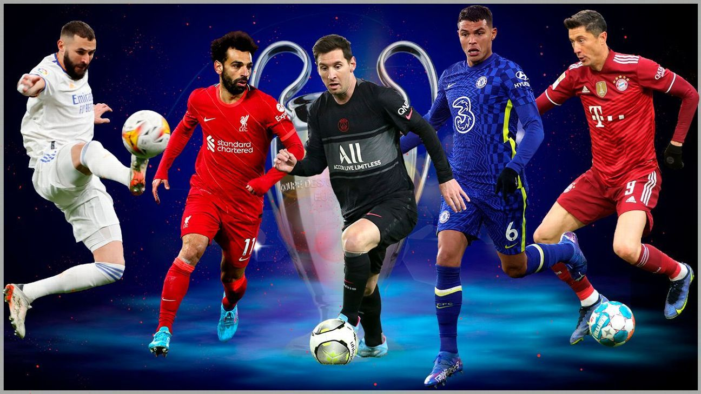
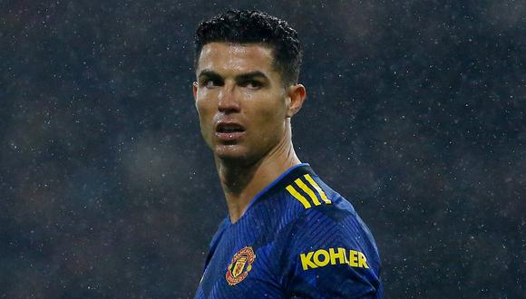
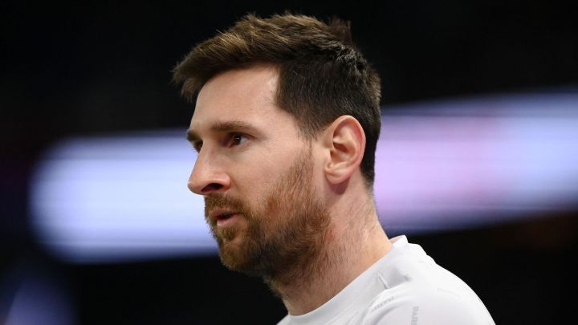
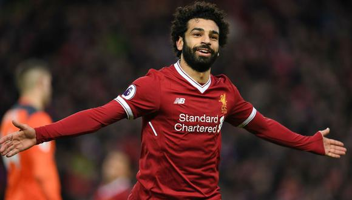
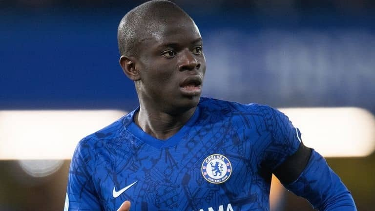
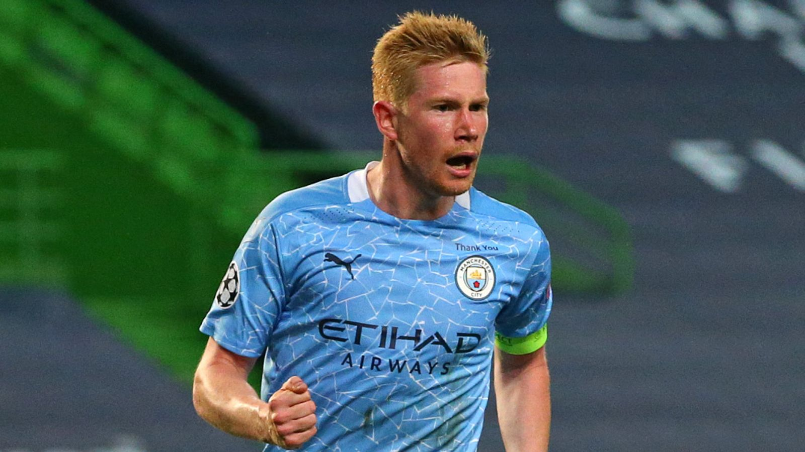
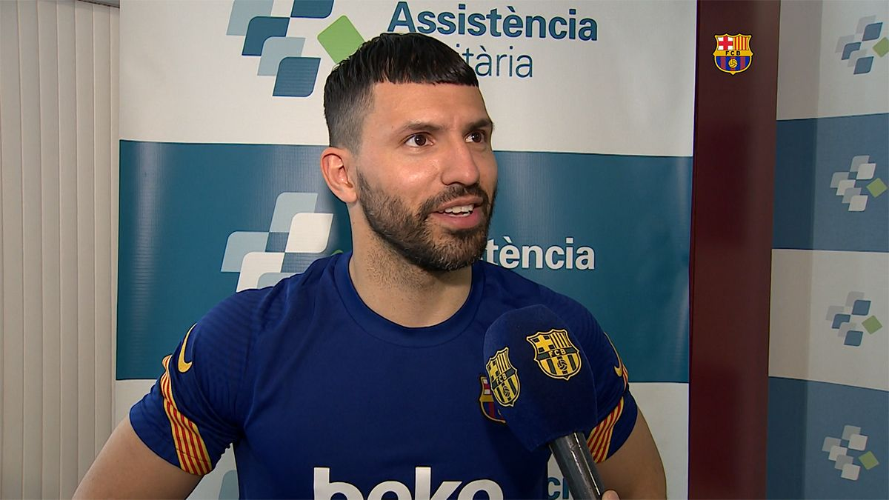

Cristiano Ronaldo dos Santos Aveiro, más conocido como Cristiano Ronaldo o CR7, es un futbolista portugués que juega como delantero en el Manchester United Football Club de la Premier League de Inglaterra y en la selección de Portugal, de la cual es su capitán y máximo goleador histórico.

Lionel Andrés Messi Cuccittini, conocido como Leo Messi, es un futbolista argentino que juega como delantero o centrocampista en el Paris Saint-Germain de la Ligue 1 de Francia. Es internacional con la selección de Argentina, equipo del que es capitán y máximo goleador histórico.

Mohamed Salah Hamed Mahrous Ghaly es un futbolista egipcio que juega como delantero en el Liverpool F. C. de la Premier League de Inglaterra, y la selección de Egipto, de la cual es su capitán. Comenzó su carrera en Egipto. Luego se trasladó al Basilea en 2012, donde ganó la Superliga en su primera temporada.

N'Golo Kanté es un futbolista francés que juega en la posición de centrocampista en el Chelsea F. C. de la Premier League de Inglaterra. Es internacional absoluto con la selección francesa desde 2016.

Kevin De Bruyne (Drongen, Gante, Bélgica, 28 de junio de 1992) es un futbolista belga que juega como centrocampista en el Manchester City F. C. de la Premier League de Inglaterra, donde es el segundo capitán. Es internacional con la selección de Bélgica.

Sergio Leonel Agüero del Castillo (Buenos Aires; 2 de junio de 1988) es un exfutbolista argentino que jugaba como delantero. Conocido comúnmente como Kun Agüero, sobrenombre que toma de un apodo de la infancia basado en el protagonista de la serie anime infantil Kum-Kum.